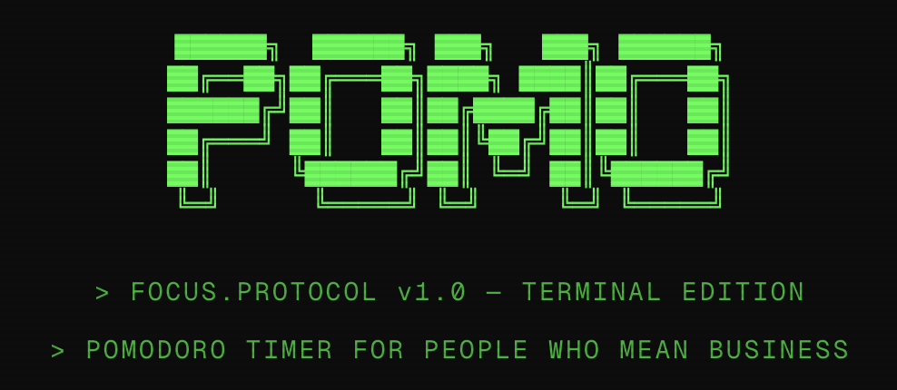

Projects
$ls ~/projects
FICC Mania
Streamlit dashboard for fixed income, currencies, and commodities, built entirely on free public data.
View source ↗

Pomo
A minimal Pomodoro timer. A little structure for focused work.
Launch app ↗
Priors
Personal blog on markets, ML, and probability.
Read articles →
DPFM @ ICLR 2024
LLMs recognizing DeFi entities. Lead author, DPFM workshop @ ICLR 2024.
Read paper ↗
MRI Lesion Mapping
CNN-based lesion mapping from MP-MRI. Lead author, SPIE Medical Imaging.
Read paper ↗
6-Card Golf
Browser-based 1v1 card game with P2P networking and in-game chat.
Play game →
Dig Dug
Classic arcade game recreation in the browser.
Play game →